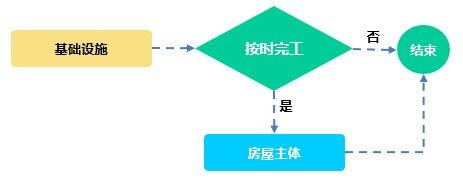
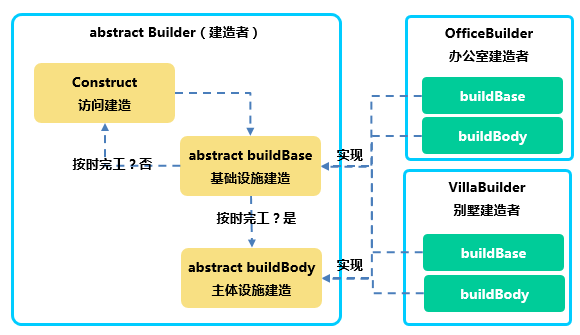

16版.工程师房屋建造
1、实验要求
本实验要求：以建筑师房屋建造为业务背景，体验“抽象类”与子类的应用关系和特性。
1-1. 业务说明：
1-1.1. 本实验以建筑师建造房屋为业务背景。
1-1.2. 房屋建造的施工规范和流程：先建基础设施（如地基），再建主体设施。
1-1.3. 基础设施必须在计划完工时间前完成施工，随后开始主体设施建设。
1-1.4. 若实际完工时间超过计划完工时间，则不能进行主体设施建设。
注意1：本实验将模拟两类房屋的施工建设：办公室建设和别墅建设。
注意2：别墅建设允许在计划完工时间基础上，延期5天。
注意3：计划完工时间：本实验取自当前系统时间。

图 1-1
1-2. 组件设计：

图 1-2
1-2.1. Builder，建造者抽象类，定义房屋建造方面相关的业务函数。
1-2.2. OfficeBuilder，办公室建造者，实现办公室特有的主体与基础设施建设。
1-2.3. VillaBuilder，别墅建造者，实现别墅特有的主体与基础设施建设。
1-2.4. Builder类的buildBase，用于描述房屋的基础设施建造，返回建造进度。
1-2.5. Builder类的buildBody，用于描述房屋的主体设施建造。
1-2.6. Builder类的construct，建造流程控制函数，作用：
1）调用buildBase，检查房屋的基础设施建设是否按时完工。
2）若按时完工，调用buildBody实现主体设施建造。
3）未按时完工，则结束业务。
1-2.7. OfficeBuilder和VillaBuilder分别继承自Builder。
1-2.8. OfficeBuilder和VillaBuilder根据业务分别实现buildBase和buildBody。
1-3. 创建工程并配置环境：
1-3.1. 限制1. 创建实验工程，命名为：SE_JAVA_EXP_E035；
1-3.2. 限制2. 创建包，命名为：cn.campsg.java.experiment；
1-3.3. 限制3. 创建包，命名为：cn.campsg.java.experiment.entity。
1-4. 创建建造者抽象类：
1-4.1. 限制1. 在cn.campsg.java.experiment.entity 包中创建建造者抽象类：
1）类名：Builder
1-4.2. 为Builder类创建抽象方法（一）：
1）限制1. 方法名为：buildBase（抽象方法）；
2）作用：用于描述房屋的基础设施建设，返回建造进度。
3）限制2. buildBase设定为1参公共方法，返回类型：boolean；
4）参数：日期类型（Date），描述基础设施的实际完工时间。
5）返回值：用于描述基础设施是否在计划完工时间前完成。
1-4.3. 为Builder类创建抽象方法(二)：
1）限制1. 方法名为：buildBody（抽象方法）；
2）作用：用于描述房屋的主体设施建设，返回建造进度。
3）限制2. buildBody方法设定为0参公共方法，无返回；
1-4.4. 为Builder类创建实体方法(三)：
1）限制1. 方法名为：construct（实体方法）；
2）作用：用于描述建造流程，先建造基础设施再建造主体设施。
3）限制2. construct方法设定为1参公共方法，无返回值；
4）参数：日期类型（Date），描述基础建设的实际完工时间。
1-4.5. construct方法的业务逻辑：
1）首先，调用buildBase（抽象方法）开始建筑物的基础建设。
2）其次，根据buildBase的返回，决定是否需要进行主体建设。
3）如果，基础设施按计划完工，则开始建筑物的主体建设。
1-5. 创建办公室建造者实体类：
1-5.1. 限制1. 在cn.campsg.java.experiment.entity包中创建办公室建造者类：
1）类名：OfficeBuilder
2）OfficeBuilder类需继承自Builder抽象类。
1-5.2. OfficeBuilder类，实现buildBase（抽象方法）：
1）获取系统当前日期，作为计划完工时间；
2）把计划完工时间和参数（实际完工时间）进行对比；
3）如果实际完工时间在计划完工时间之前，则向控制台输出：
“已完成商务办公楼的基础建设！”
4）如果实际完工时间在计划完工时间之后，则向控制台输出：
“没有在计划完工时间内完成办公楼的基础建设，需要重新评估！”
1-5.3. OfficeBuilder类，实现buildBody（抽象方法）：
1）控制台输出：”开始商务办公楼的主体房屋建设……！”
1-6. 创建别墅建造者实体类：
1-6.1. 限制1. 在cn.campsg.java.experiment.entity包中创建别墅建造者实体类：
1）类名：VillaBuilder
2）VillaBuilder类需继承自Builder抽象类。
1-6.2. VillaBuilder类，实现buildBase（抽象方法）：
1）实现流程与OfficeBuilder基本类似。
2）别墅建设允许在计划完工时间基础上，延期5天。
3）获取系统当前日期并后延5天作为计划完工时间；
4）把计划完工时间和参数（实际完工时间）进行对比；
5）如果实际完工时间在计划完工时间之前，则向控制台输出：
“已完成欧式风格的别墅地基建设！”
6）如果实际完工时间在计划完工时间之后，则向控制台输出：
“没有在计划完工时间内完成办别墅的基础建设，需要重新评估！”
1-6.3. VillaBuilder类，实现buildBody（抽象方法）：
1）控制台输出：”开始进行欧式风格的别墅主体建设……！”
1-7. 显示两类建筑工程实施结果：
1-7.1. 限制1. 在cn.campsg.java.experiment包中创建主类：MainClass；
1-7.2. 为MainClass创建入口主方法：main；
1-7.3. 在main中，创建1个商务办公楼对象和2个别墅对象（共3个建筑对象）；
1-7.4. 在main中，根据需要为3个建筑对象创建3个不同的实际完工时间；
1-7.5. 运行建筑对象（1个办公楼和2个别墅）的建造方法查看施工建造结果。
2、实现思路
2-1. 创建工程并配置环境。
2-2. 创建建筑工程抽象类：
2-2.1. 在cn.campsg.java.experiment.entity 包中创建抽象类：Builder；
2-2.2. 为Builder类创建抽象方法：buildBase，其形式如下：
+提示 public abstract boolean buildBase(Date endDate); |
2-2.3. 为Builder类创建抽象方法：buildBody，其形式如下：
+提示 public abstract void buildBody(); |
2-2.4. 为Builder类创建建造流程函数：construct，其形式如下：
+提示 public void construct(Date endDate){ } |
2-2.5. 实现construct函数的业务逻辑：
1）函数参数：endDate，表示当前建筑项目的实际完工时间；
2）在construct方法内调用buildBase方法，判断返回；
3）若返回true，表示按计划完成基础建设，则开始调用buildBody方法；
4）若返回false，则不调用buildBody方法。
2-3. 创建办公室建造者实体类：
2-3.1. 在cn.campsg.java.experiment.entity 包中创建办公楼实体类：OfficeBuilder。
1）OfficeBuilder类需继承自Builder抽象类。
2-3.2. 实现父类Builder的抽象方法buildBase，业务逻辑如下：
1）函数参数：endDate，表示办公室基础建设的实际完工时间。
2）获取当前系统时间（新建Date对象），表示计划完工时间。
3）利用系统时间对象的compareTo方法与endDate进行对比。
4）当对比结果大于零时，在控制台输出如下信息并返回true：
“已完成商务办公楼的基础建设！”
5）当对比结果小于零时，在控制台输出如下信息并返回false：
“没有在计划完工时间内完成办公楼的基础建设，需要重新评估！”
2-3.3. 实现父类Builder的抽象方法buildBody，业务逻辑如下：
1）在控制台输出信息：“开始商务办公楼的主体房屋建设……！”
2-4. 创建别墅建造者实体类：
2-4.1. 在cn.campsg.java.experiment.entity 包中创建类：VillaBuilder；
1）VillaBuilder类需继承自Builder抽象类。
2-4.2. 实现父类Builder的抽象方法buildBase，业务逻辑如下：
1）函数参数：endDate，表示别墅基础建设的实际完工时间。
2）获取当前系统时间（新建Date对象）。
3）别墅建设允许在计划完工时间基础上，延期5天，算法规则如下：
+ 提示 // curDate：当前系统时间（计划完工时间）；endDate：参数，实际完工时间 // getTime():将日期转换成毫秒；24 * 60 * 60 * 1000表示1天的毫秒数。 // 两个日期相减 / 1天的毫秒数 + 5（延期日期），大于0表示按期完工。 long result = (curDate.getTime() - endDate.getTime()) / (24*60*60*1000) +5 ; |
4）若result大于零，在控制台输出如下信息并返回true：
“已完成欧式风格的别墅地基建设！”
5）若result小于零，在控制台输出如下信息并返回false：
“没有在计划完工时间内完成办别墅的基础建设，需要重新评估！”
2-4.3. 实现父类Builder的抽象方法buildBody，业务逻辑如下：
1）在控制台输出信息：“开始进行欧式风格的别墅主体建设……！”
2-5. 显示两类建筑工程实施结果：
2-5.1. 在包cn.campsg.java.experiment 中创建业务主类：MainClass；
2-5.2. 在MainClass中定义主函数main，体验建造者的房屋建造过程；
2-5.3. 将以下代码复制入MainClass类，并利用Ctrl+Shift+O快捷键导入类包；
2-5.4. 以下代码将用于体验抽象类的真正意义：定流程，解耦合。
+ 代码块： public static void main(String[] args) { java.text.SimpleDateFormat format = new java.text.SimpleDateFormat("yyyy-MM-dd"); // 创建办公室建造者 Builder office = new OfficeBuilder(); // 创建别墅建造者 Builder villa = new VillaBuilder(); Date oDate =null ; Date vDate =null ; try { // 办公室的实际完工时间 oDate =format.parse("2016-10-11"); // 别墅的实际完工时间 vDate =format.parse("2016-10-16"); } catch (ParseException e) { e.printStackTrace(); } // 建造办公室 office.construct(oDate); // 建造别墅 villa.construct(vDate); } |
3、验证与测试
3-1. 右键点击MainClass类，依次选择：Run As->Java Application。
3-2. 运行程序，查看输出结果是否符合预期。
任务答案
1. 代码清单：cn.campsg.java.experiment.entity.Builder.java
public abstract class Builder { public Builder() { } /** * 此方法进行房屋的基础建造，并提示是否按计划完成. * 只有按计划完成建筑的基础建设后，才可建造房屋主体。 * 另：当建造别墅时，工期后延5天，即完工时间小于(系统时间+5)。 * @param endDate 基础建设结束日期:实际完工时间； * @return 当完工时间小于系统时间时，表示完成基础建设，返回true,否则返回false。 * */ public abstract boolean buildBase(Date endDate); /** * 在基础建好以后开始建筑物主体的建设 * @return */ public abstract void buildBody(); /** * 建造工程施工规范： * 1.第一步：完成建筑物基础建设； * 2.第二部：开始建筑物主体建设 * @param 基础建设结束日期:实际完工时间；系统时间为：计划完工时间 * 只有基础建设完成后在开始房屋主体建设 */ public void construct(Date endDate){ if (!buildBase(endDate)) return; buildBody(); } } |
2. 代码清单：cn.campsg.java.experiment.entity.OfficeBuilder.java
public class OfficeBuilder extends Builder { @Override public boolean buildBase(Date endDate) { //获取系统当前日期作为计划完工时间 Date curDate = new Date(); //当前结束日期和系统日期的关系：小于等于0说明超期；大于等于，说明按要求完成基础建设 int result = curDate.compareTo(endDate); if(result>0){ System.out.println("已完成商务办公楼的基础建设！"); return true ; }else{ System.out.println("没有在计划完工时间内完成办公楼的基础建设，需要重新评估！"); return false ; } } @Override public void buildBody() { System.out.println("开始商务办公楼的主体房屋建设……！"); } } |
3.代码清单：cn.campsg.java.experiment.entity.VillaBuilder.java
public class VillaBuilder extends Builder { @Override public boolean buildBase(Date endDate) { //当前系统时间：计划完工时间 Date curDate = new Date(); //建造别墅后延5天：如结果大于0，则完成别墅的基础建设 long result = (curDate.getTime()-endDate.getTime())/(24*60*60*1000) +5 ; //当前结束日期和系统日期的关系：小于等于0说明超期； //大于等于，说明按要求完成基础建设 if(result>0){ System.out.println("已完成欧式风格的别墅地基建设！"); return true ; }else{ System.out.println("没有在计划完工时间内完成办别墅的基础建设，需要重新评估！"); return false ; } } @Override public void buildBody() { System.out.println("开始进行欧式风格的别墅主体建设……！"); } } |
4. 代码清单：cn.campsg.java.experiment.MainClass.java
public class MainClass { public static void main(String[] args) { java.text.SimpleDateFormat format = new java.text.SimpleDateFormat("yyyy-MM-dd"); Builder office = new OfficeBuilder(); Builder villa = new VillaBuilder(); Date oDate =null ; Date vDate =null ; try { oDate =format.parse("2016-10-11"); vDate =format.parse("2016-10-16"); } catch (ParseException e) { e.printStackTrace(); } office.construct(oDate); villa.construct(vDate); } } |
完成效果预览
移动端开发步骤